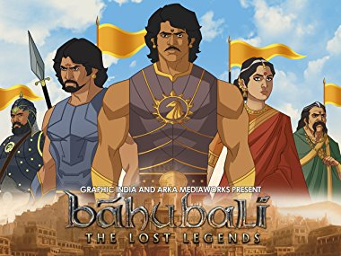
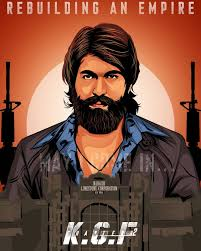
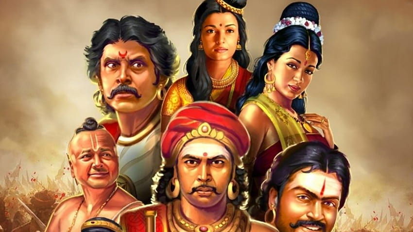
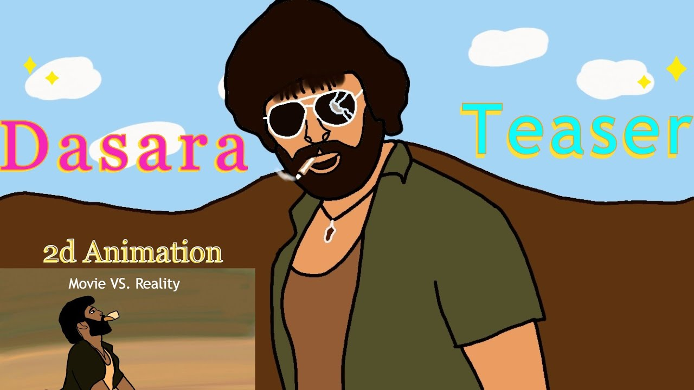
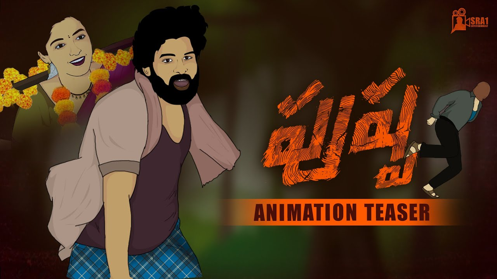
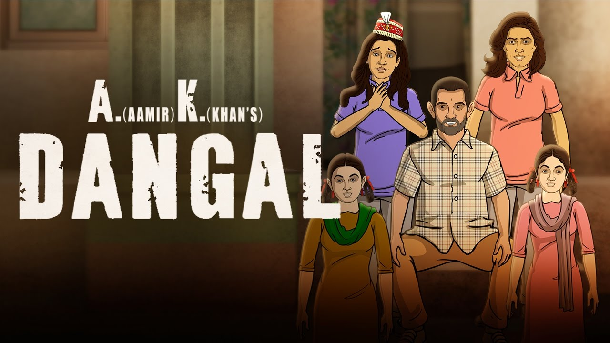

<html>
    <head>
        <title>gradient</title>
    </head>
</html>
<body>
    <h2><center>PAN INDIA MOVIES</center></h2>
    <div class="t">
        <div class="p"><h3><center>BAHUNALI</center></h3><p>It's a tale of two cousins in the Kingdom of<br>Mahishmati, India. Balla fights his way with <br>cousin Baahubali for the throne.</p></div>
        <div class="p"><h3><center>KGF</center></h3><p>K.G.F is an Indian Kannada-language period<br> gangster film series set mostly in the Kolar <br>Gold Field</p></div>
        <div class="p"><h3><center>PONNIYIN SELVAN</center></h3><p>The Son of Ponni also known and marketed as<br> PS-1, is a 2022 Indian Tamil-language epic hist-<br>orical adventure film directed by Mani Ratnam</p></div>
        <div class="p"><h3><center>DASARA</center></h3><p>Dharani loves Vennela since their childhood, <br>but later learns that Suri and Vennela love<br> each other, where he sacrifices his love and<br> decide to unite Suri and Vennela.</p></div>
        <div class="p"><h3><center>PUSHPA</center></h3><p>In the 1990s, Pushpa Raj, a labourer, decides to <br>smuggle red sandalwood, a rare wood in high <br>demand that only grows in the SeshachalamHills <br>of the Chittoor district in AP.
        </p></div>
        <div class="p"><h3><center>DANGAL</center></h3><p>The movie plot is based on the True Story. The<br> story revolves in a small village named Balali,<br> District Bhiwani, Haryana State in India</p></div>
        </body>
<style>
    .t{
    display:grid;
    grid-template-columns: auto auto auto;
    padding: 30px;
    row-gap: 30px;
    column-gap: 40px;
    justify-content:space-around;
    }
    h2{
        background-color: orange;
        border:1px solid;
    }
    body{
        background-image:linear-gradient(red,orange);
    }

</style>

    </div>
</body>